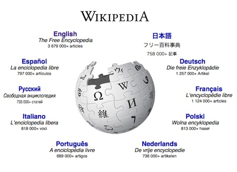
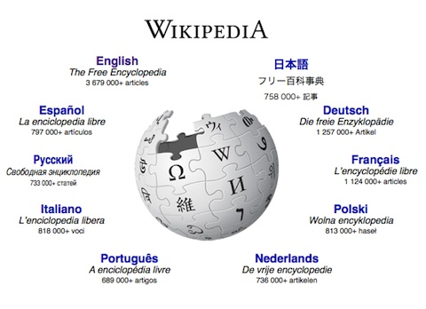
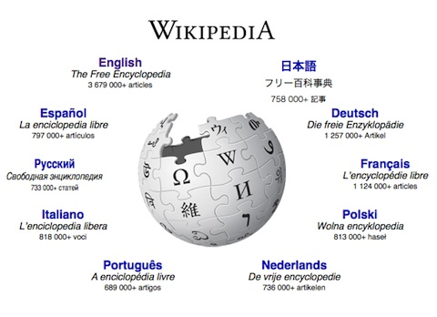

As I have previously mentioned, my work here at the Institute for Pure and Applied Mathematics is centered on the extremely interesting task of information extraction. We are attempting to find information to build company profiles to assist Praedicat, Inc.'s analyst, and this information comes from a wide variety of sources with diverse degrees of dependability and data representations. To give you an idea of the problem, imagine the classic analogy for programming: telling someone to make a peanut butter and jelly sandwich. If you haven't seen this before, I highly recommend checking it out, but the idea is that you ask someone to instruct you how to make a peanut butter and jelly sandwich and you are only allowed to follow their exact instructions. For example, if you are told "put peanut butter on the bread" you would literally put the jar of peanut butter on the loaf of bread. The activity is pretty silly, but it is useful for conveying the idea that computers are pretty naive despite what we may think of them. A beginning Computer Science student doesn't understand that a computer cannot perform simple tasks that a human can because they lack the cognitive abilities that we attribute to intelligence and only follow the explicit instructions we give them. Computers don't know how to perform inference or draw analogies. Now imagine you have that same person, someone who isn't capable of making a peanut butter and jelly sandwich, and you are asking them to find information on companies.
As you can imagine, there is no single set of instructions that can achieve this for every company out there. Even seemingly simple functions that would be extremely useful like isCompanyHomepage(), which would return true if we are on the company's homepage (or even domain), are extremely difficult when you think about how you would implement them. This may seem surprising on its face, but computers don't have critical thinking skills and even many humans are unable to tell the difference between legitimate websites and scams. This means that we need to instead rely on more flexible and dynamic techniques when attempting to find our information. In this post, I will focus on talking about information retrieval, the study of finding unstructured materials that satisfy an information need from within a large collection. This function has been fulfilled in our society for decades, by reference librarians, paralegals, and a variety of professions, but with the explosion of interest in artificial intelligence and information extraction, the need for information retrieval is more important than ever. Specifically, I will be talking about web-based information retrieval: web crawling and web scraping.
Web-based information is generally held in the HTML files on websites, which our internet browsers know how to interpret to give us webpages. HTML, or Hypertext Markup Language is the the standard markup language for the internet and is also what most of this website is written in! This means that web-based information retrieval is really a problem of converting HTML to structured information. Fortunately for us, there are packages out there which have been designed by programmers for pulling data out of HTML and one my favorites is BeautifulSoup. This gets us one step closer to structured data, but much of the information on the web (like the information you're reading currently) still isn't structured well enough to put directly into a database. Natural lanuage texts have to be analyzed and interpretted to store actionable information in a database or else we are just compiling a lot of documents, and this is where the information extraction and Natural Language Processing becomes very important, but that is a topic for another post.

Retrieving the data from the web is usually done in one of two ways: web crawling and web scraping. We will breifly discuss both techniques, but the main distinction between the two is that scraping is a targetted approach usually used for uniformly structured websites or uniformly structured elements of websites to produce structured data and crawling is a systematic approach to browse the World Wide Web which when done for information extraction, yields a messier set of data from a wider variety of sources.
Web scraping is the process of extracting data from a website. When writing a web scraper, you are generally trying to produce clean and actionable data, meaning that your application is usually written for a structured web source and you are parsing it in a very specific way that only really applies to that site. For example, if you were scraping Wikipedia, you would have a certain structure: the table at the top that holds key information and then sections, but as soon as you moved to another domain, that structure would change drastically meaning your scraper would not work as intended anymore. It is used in a variety of applications, including price comparison, and information aggregation. For our project, we have designed a few web scrapers for domains that provide high-integrity information in a structured way because we believed that the cost of designing the tailored web scraper was outweighed by the benefit of the clean, structured data we would get.

Web crawlers on the other hand are internet bots that systematically explore the internet. This can be done for a variety of purposes, most commonly web spidering which allows search engines such as Google to index the Internet an provide the world with better results. In our case, we are designing a web crawler to look for information that will help us in building a company profile to help Praedicat's forward-looking models, so we ae performing general web scraping to get the information from the sites we find. However, the task of finding relevant information is not an easy one and is still being studied today. Currently, because of time constraints, we are utlilizing the work Google has done and starting our crawling from a Google search. However, this approach is still giving us a lot of useless webpages and I will be sure to talk about our attempts at classification to help us filter out "bad" webpages in a future post!
One thing to note about web crawling is that there is a Robots Exclusion Standard. We knew about this, and I wrote code to help with this a while ago, but in our headlong rush we never implemented it on our web crawler and ended up getting banned from Bloomberg. So definitely follow the rules! That said, I would like to give a shoutout to whomever wrote Bloomberg's robots.txt file because I laughed when I saw Asimov's Three Laws of Robots along with instructions to apply if you could read it.
This work has been really interesting so far, and it's getting even more exciting as we are now delving into knowledge graphs. I can't thank IPAM, Praedicat, Stephen DeSalvo, and Urjit Patel enough for this opportunity, and if you're interested in seeing the odd stuff we are doing with Information Extraction and Knowledge Graphs going forward, be sure to check back.